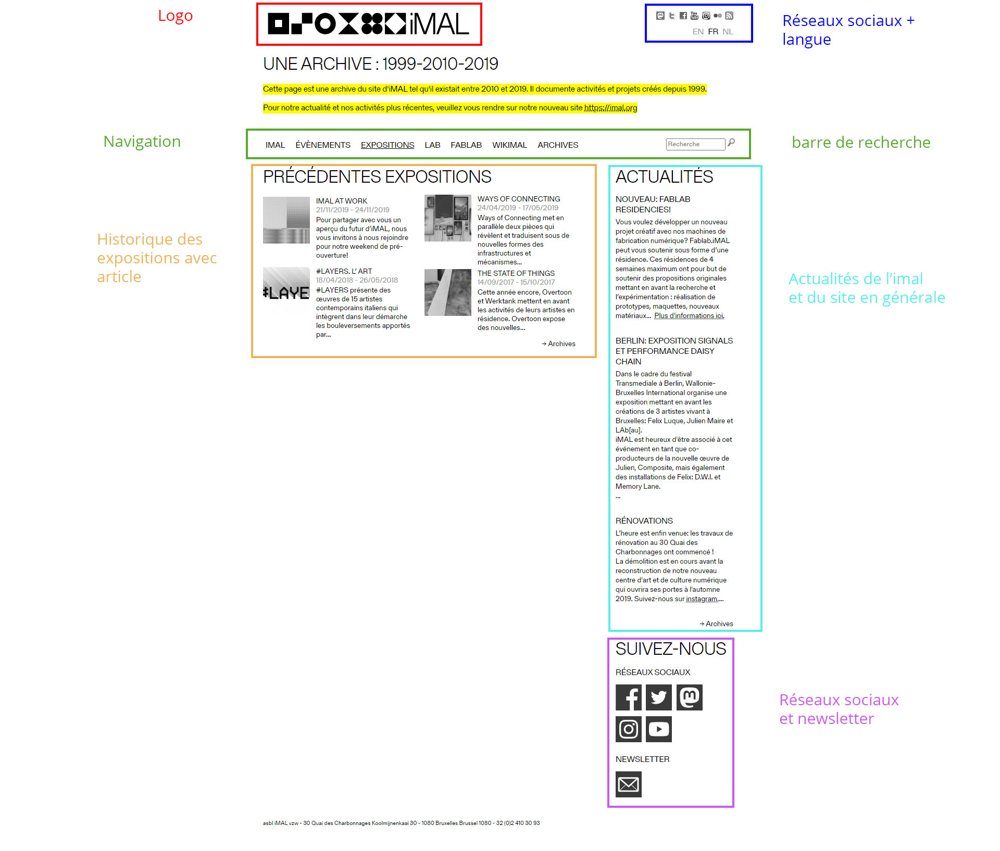

Rethinking
User
Xperience
Jeudi 17 décembre 2020
RUX est lancé ! Sans trop savoir en quoi cet atelier consiste, je réalise un test utilisateur sur le site de l’iMAL ayant pour objectif de déterminer dans quelle mesure le service est utilisable et d’identifier les éventuels problèmes.
Lien de mon test utilisateurLundi 1er février 2021
Après un long repos, M. Marchal (notre professeur) nous explique que le but de cet atelier est de revoir l’expérience utilisateur d’une fonctionnalité d’un site et d’améliorer l’expérience utilisateur de ce dernier.
Une fois l’explication de l’atelier terminée, j’ai pu me mettre au travail en commençant par former un groupe de 4. Les groupes étant libres, j'ai décidé d’être accompagné par :


Nous avons mis en commun nos 4 tests utilisateur et avons conclus ceci:
- mauvaise visibilité globale
- manque de couleurs
- mauvais choix dans la synthétisation de la navigation (aussi bien principal que secondaire)
- surcharge d’articles sur les pages qui empêche la visibilité des informations essentielles
- les informations de contactes et/ou pratiques ne sont pas regroupées
Une fois notre conclusion faite et pour avoir une plus grande vue d’ensemble, nous avons discuté et mis en commun avec l’ensemble de la classe nos différentes conclusions. Ce qui nous a amené à une plus large conclusion.
- problème de navigation, elle n’est pas intuitive, expérience utilisateur mauvaise, profondeur de site trop importante
- mauvaise architecture d’information
- pas de mise en évidence, on ne trouve pas les informations (organisation et hiérarchisation du contenu, manque de contraste entre les éléments de contenu)
- problème de taxonomie, les choses sont mal libellées
- redondances pour certaines infos (contact, réseaux sociaux)
- pas de respect des lois de la gestalt, les informations sont groupées au lieu d’être séparées, illisibilité
Maintenant que nous sommes tous d’accord sur les problèmes présents sur l’Imal, nous réalisons un inventaire de contenu pour pouvoir lister l’intégralité des contenus présents sur le site afin de comprendre comment et pourquoi ces informations et fonctionnalités se trouvaient là. Pour faire cela de façon plus efficace nous nous sommes distribué les différentes pages du site et j’ai hérité de la page “exposition”.
Mercredi 3 février 2021
Nous avons trouvé des problèmes et fait un inventaire de contenu du site mais l’Imal c’est quoi au juste?
Pour répondre à cette question, nous avons défini l’Imal en 5 lignes :
L’iMAL (Interactive Media Art Laboratory) se situe à Bruxelles et est un centre d’art contemporain ouvert à tous. L’iMAL a pu ouvrir son FabLab et abrite des expositions, conférences, concerts,... ainsi qu’un Media Lab qui permet aux artistes de pouvoir expérimenter,... sur les nouvelles technologies. Des ateliers formatifs sont également présents.
Une fois la définition de l’Imal terminée, on s’attaque à la compréhension des besoins utilisateurs. Afin de fournir une solution adaptée aux besoins, on établit avec l’ensemble de la classe une liste de tâches réalisables sur le site.
Sur la quarantaine de tâches trouvées, on établit nos Top Task à l’aide d’un vote. Les 5 tâches choisies sont :
- consulter la liste / s’inscrire à un atelier
- location d’un espace au sein de l’Imal
- développer un projet avec l’Imal / au FabLab / Résidence
- informer l’utilisateur sur les derniers ateliers / activitées / expo / …
- voir les tutoriels
A présent, il fallait faire un choix ! Nous avons donc choisi la tâche “consulter la liste / s’inscrire à un atelier”. Notre tâche étant connue, nous l’avons détaillée en 5 lignes :
Afficher une liste d'ateliers disponible à L'iMAL avec une description des ateliers ainsi que ses informations pratiques. Possibilité à l’utilisateur de s’y inscrire s’il le souhaite.
Une fois cela fait, nous avons listé les différentes fonctionnalités liées à cette tâche.
- inscription via un formulaire, mail, téléphone, réseaux sociaux, ...
- option d’ajout de l’atelier choisi dans son agenda personnel.
- connexion en tant que membre
- tris des ateliers avec un niveau de difficulté
- tris des ateliers en fonction si on est déjà membre ou non
- tris des ateliers en fonction du matériel nécessaire ou mis à disposition
- afficher les disponibilités de l’atelier et le nombre de participants maximum
- redirection vers paiement/abonnement
- confirmation du choix de l’atelier avec toutes les informations reprises (dates, heures,...)
Vendredi 5 février 2021
Il est maintenant temps de retourner à un travail plus individuel. Je me lance dans un Audit en fonction de ma Top Task et de ses fonctionnalités imaginées. Pour ce faire, je recherche des fonctionnalités répondant à ma tâche en prenant le temps de lister leurs points forts ainsi que leurs points faibles.
Inscription via un formulaire, mail, téléphone, réseaux sociaux, ...
Points forts :
- obligation de répondre à toutes les cases obligatoires pour valider le formulaire
- facilement compréhensible
- l’utilisation d’un formulaire automatise toute la démarche
Points faibles :
- Possibilitées limitées
Option d’ajout de l’atelier choisi dans son agenda personnel
Points forts :
- facilite la mémorisation de l'inscription de l’utilisateur à un atelier
- permet à l’utilisateur de vérifier la disponibilité de son agenda pour l’ajout de l’atelier
Points faibles :
- l’utilisateur doit utiliser un agenda en ligne
- il faut parvenir à offrir cette fonctionnalité à tous les utilisateurs y compris ceux qui n’utilisent pas google agenda
Connexion en tant que membre
Points forts :
- permet de rapidement se connecter avec ses logins
Points faibles :
- il faut mémoriser ses identifiants
Tris des ateliers
Points forts :
- le filtre permet d’afficher ce que l’utilisateur recherche
- le filtre indique plusieurs possibilités et donc peut inspirer/inciter/aider l’utilisateur dans son choix
Points faibles :
- pour mettre en place le filtre il faut catégoriser/étiqueter chaque événement
Redirection vers paiement/abonnement
Points forts :
- reprise du détail de la commande
- l’utilisateur peut vérifier si c’est bien ce qu’il souhaite
- affichage des différents moyens de paiements
- indique la redirection vers un site externe sécurisé pour la transaction
Points faibles :
- peut émettre un doute ou faire changé d’avis l’utilisateur
Confirmation du choix de l’atelier avec toutes les informations reprises (dates, heures,...)
Points forts :
- la confirmation indique l’enregistrement de la commande pour l’utilisateur
- permet une nouvelle fois à l’utilisateur qu’il n’y a pas d’erreur dans sa commande
- un moyen de contact à la fin du récapitulatif permet à l’utilisateur de facilement prendre contact en cas d’erreur
Points faibles :
- peut finir dans la catégorie “spam” dans la boîte mail de l’utilisateur et donc de ne pas être vu
C’est l’heure des premiers croquis !
L’audit étant terminé, il était temps de croquer les 3 fonctionnalités qui selon moi étaient les plus adaptées pour réaliser ma tâche.
 Croquis - page d'inscription
Croquis - page d'inscription
Lundi 8 février 2021
Afin de mieux comprendre l’utilisation du site par un utilisateur lambda, j’ai réalisé un User Journey. Cela consiste à mettre en place différents scénarios dans le but de couvrir un maximum de situations rencontrées par les utilisateurs lors de leur passage sur notre fonctionnalité.
Mes User journey m’ont permis de comprendre certains problèmes avec mes croquis de base notamment concernant l’identification de l’utilisateur sur le site ou la position de certains boutons.
Vendredi 12 février 2021
Il est maintenant temps de passer aux prototypes papiers afin d’avoir une vision plus globale de l’interface et de son fonctionnement. J’avais déjà fait des croquis de base détaillé donc je n’ai fait qu’améliorer mon projet en modifiant les fonctionnalités d’inscription et de connexion qui posaient problèmes. Et comme on commence toujours par imaginer le design d’un projet par sa version mobile j’ai du rectifier certains positionnement.